Every picture is the live preview in WebKit. "Now" is the page as it is today. "Proposed" is the same page with the proposal's stylesheet and a few lines of script injected (yeehaa-ask-styling-pass/proposal.css and proposal.js). The fonts and the map are the real ones. Answers differ between pictures because each is a fresh question.
One thing the injected script can only stand in for: the draft essay is hidden from the sources list here, but the answer text still mentions it. The real fix keeps drafts out of guest answers altogether.
Space and type on a phone
The top bar and the sheet's title row give back 80px between them. Nothing gets bigger except the sources, which move from 12px pills to 14px rows you can tap. Everything else stays the same size or gets smaller.
Space
Now
Proposed
Top bar
83px
53px
"Ask Yeehaa" title row in the sheet
52px
none; ✕ floats over the map's corner
Text
Now
Proposed
Headline
44.9px
37px
Intro under the headline
17.6px
16px
"Where would you start?"
23.2px
19.2px
Starting questions
17.6px
16px
Ask box
17.6px
16px (the smallest size iOS doesn't zoom into)
Answer text
16px
15px
Answer headings the model writes
larger than the text
15px, bold
Sources
12px pills
14px rows
Sheet title, waiting line, note under the composer
16px, 14px, 12px
unchanged
On desktop the text keeps its size. The header menu and footer labels change face: spaced monospace capitals become the body face in normal case, which needs a larger size to read at the same weight.
No "YOU" and "YEEHAA" labels, no "About". The question and the answer read as a conversation without spaced capitals over each turn, and the About link goes here as it already did on phones.
One paragraph rhythm. Today the pieces the answer lists run together while its paragraphs are spaced.
A lit piece is its shape in orange with one thin ring, instead of a blurred double halo.
Sources are a list in the map's shapes, each with its type at the right. The leads start at the end of each row, so they no longer cross the pills' text like a strikethrough.
Only published pieces, once each. Today the list has a LinkedIn post next to the essay it is about, a bare topic ("institutional-memory") and a draft.
"↓ Rest of the answer" sits under the composer in place of the note while there is more to read. Today a round ↓ sits over the text.
Plain labels. "Navigate", "More" and "Powered by Rizom" drop the spaced monospace capitals, like the header.
Phone
Now
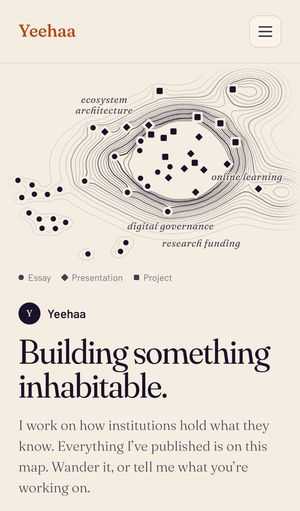
Proposed
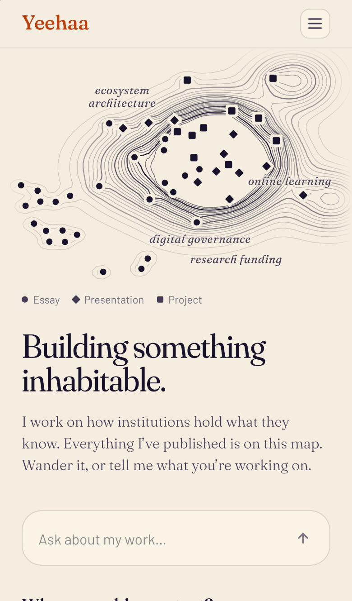
Homepage
A slimmer top bar: 53px instead of 83px, with a smaller menu button. The wordmark keeps its size.
The name once, as on desktop.
A smaller headline and intro (44.9 to 37px, 17.6 to 16px), so the ask box shows on the first screen.
Now
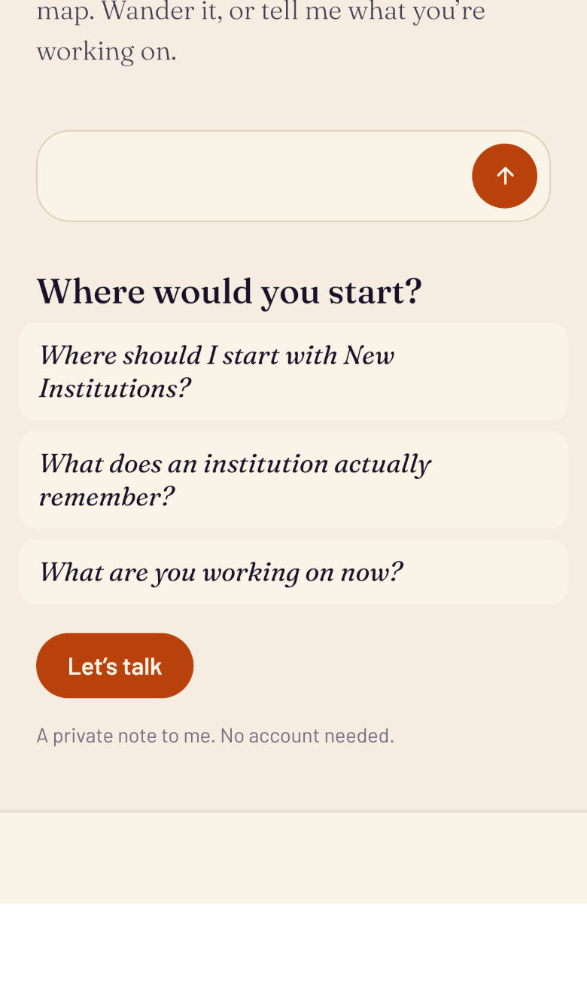
Proposed
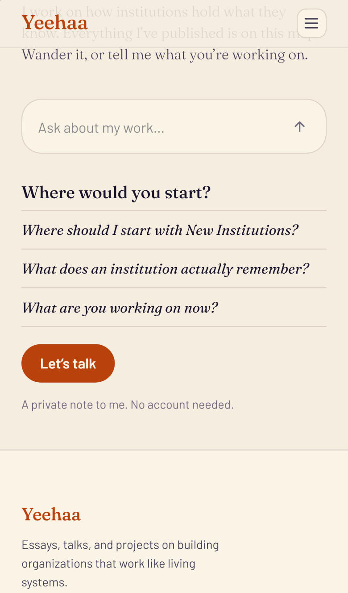
Starting questions
A list, not cards. The questions lose their filled boxes and sit between hairlines, as they already do on desktop.
Now
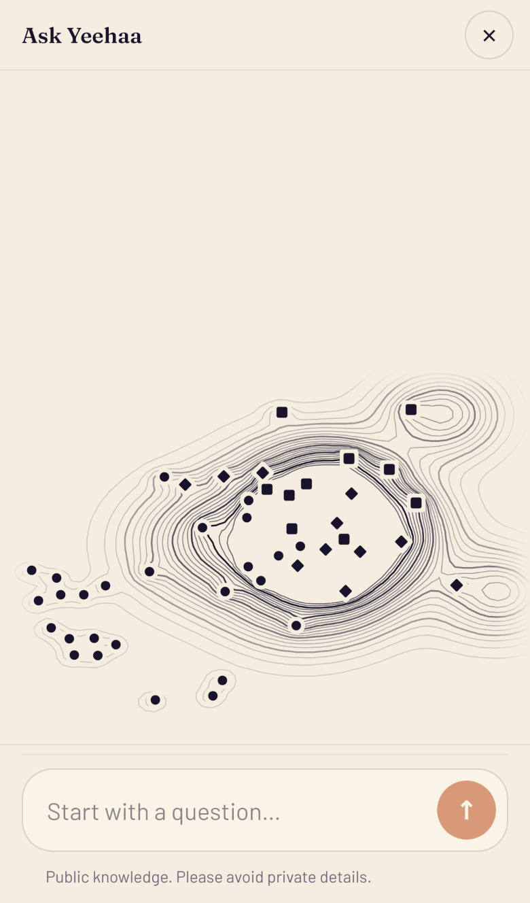
Proposed
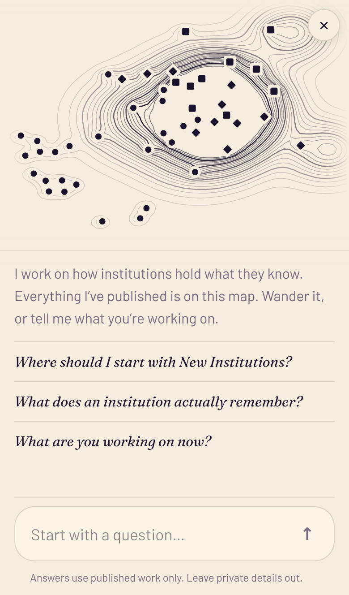
The sheet opens
No title row. "Ask Yeehaa" takes 52px that the map and the answer can use; the sheet is already clearly the conversation. The ✕ floats over the map's top corner, and Back, Escape and swiping down close the sheet as before. Screen readers still hear the title.
The map starts where it stays. Today it sits at the bottom of the sheet and jumps to the top when the question is sent. It now opens at the top, where every later state has it.
The starting questions are the same list as on the page, instead of pills.
One note, the same in every state: "Answers use published work only. Leave private details out." Today it changes after the first question and names Yeehaa.
Now
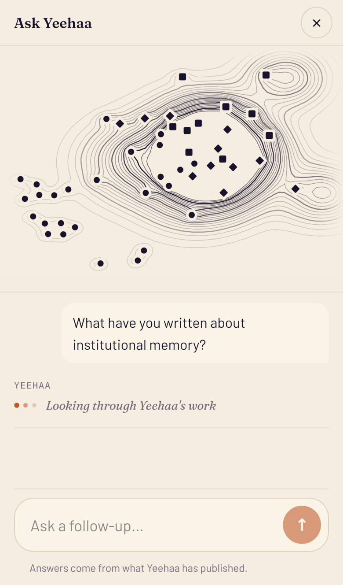
Proposed
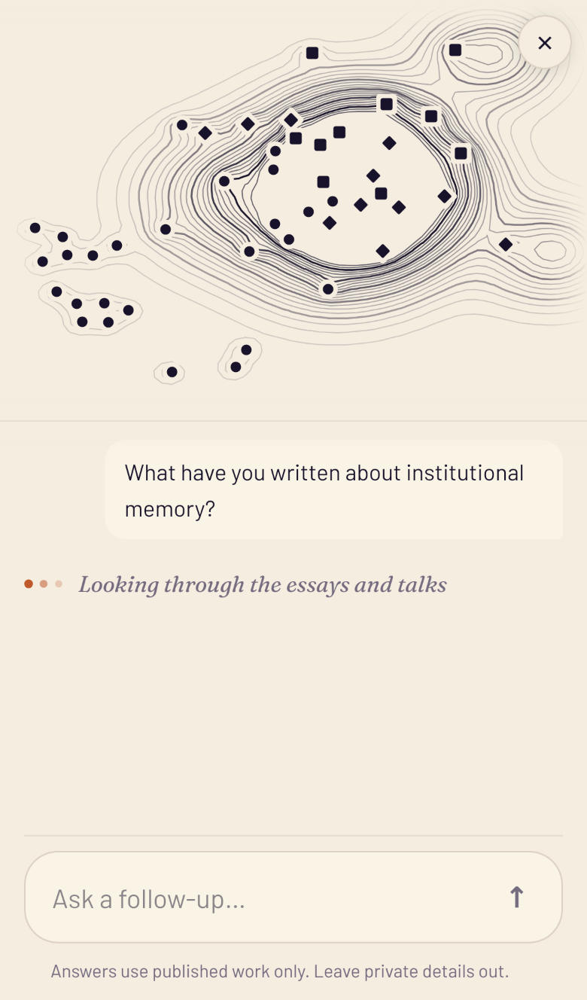
Waiting
No "YEEHAA" label, and the waiting line names the work, not the person: "Looking through the essays and talks".
One rule above the composer. Today there are two, eight pixels apart.
Now
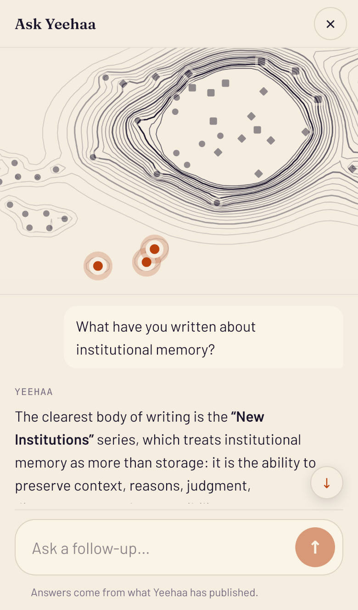
Proposed
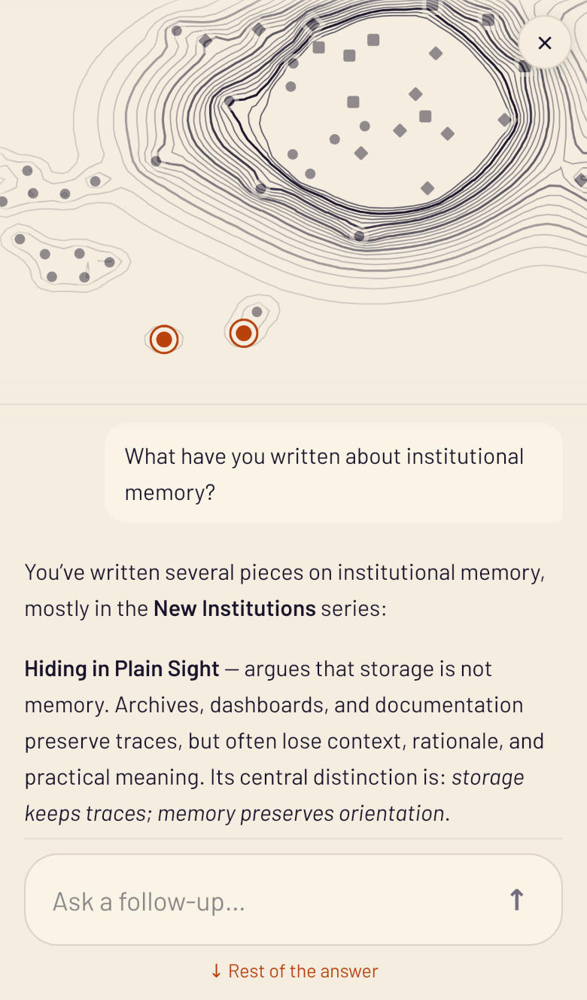
The answer arrives
52px more for the answer, from the title row that is gone.
Answer text at 15px, and the model's own headings at text size.
"↓ Rest of the answer" under the composer, where the note was; the round ↓ over the text goes.
Lit pieces with one thin ring.
Now
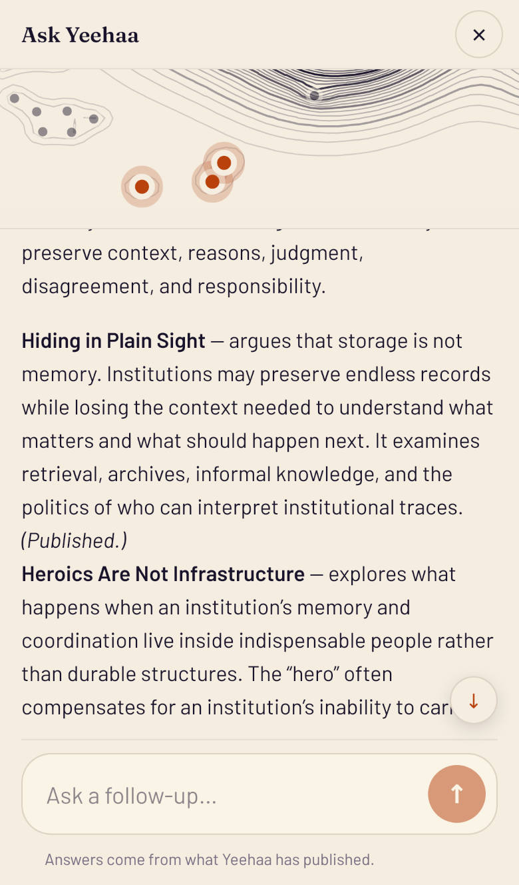
Proposed
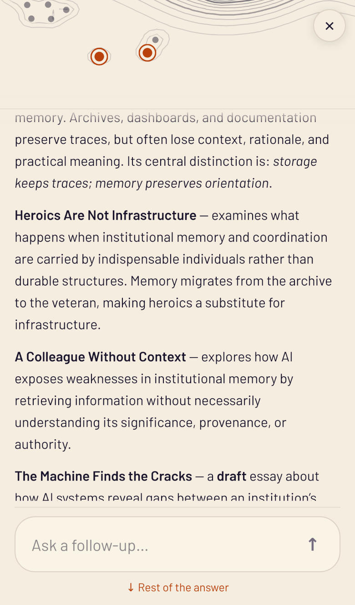
Reading
The strip keeps the lit pieces in its middle. Today pieces near the map's edge are pressed against the strip's lower edge.
Text passes under a short fade instead of being cut in half at the strip's edge.
Now
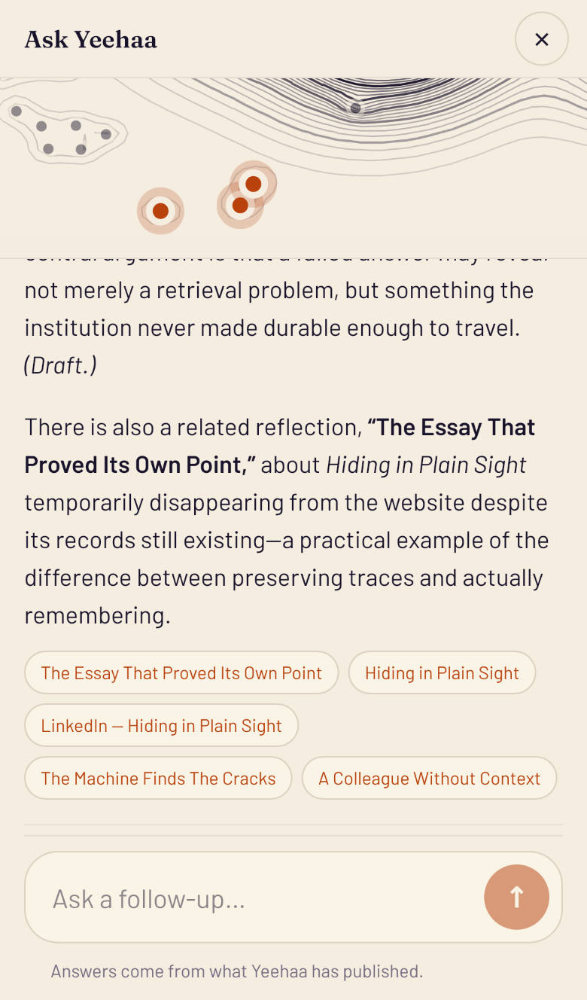
Proposed
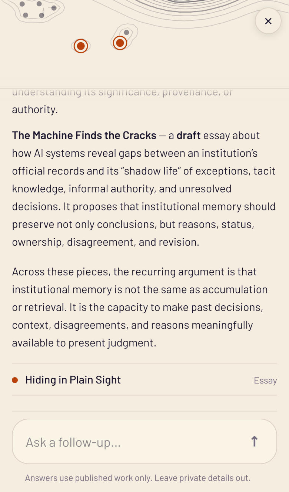
Sources
The same list as on desktop: the piece's shape, its title, its type. Published pieces only, once each.